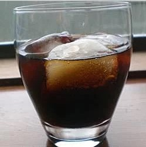

Mocha Cola

A cocktail made with coffee liqueur and cola - very simple and sweet.
Ingrediants
- 2 fluid ounces coffee flavored liqueur
- 2 fluid ounces cola-flavored carbonated beverage
Steps
Step 1
- Fill a highball glass to 3/4 with ice.
Step 2
- Pour in coffee liqueur and cola.
Step 3
- Stir.
Click Here to see more recipes